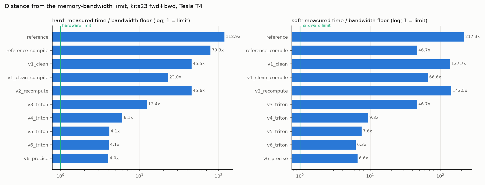

Sprints: S1-S2
1. The loss, and why the original is slow
Concept: what mL1-ACE measures
A segmentation network outputs, for every voxel and class, a probability p. A
model is calibrated when its confidence matches reality: of all voxels predicted
with probability ~0.8 for "kidney", ~80% really are kidney. The average calibration
error (ACE) measures the gap:
- Split the probability range [0, 1] into K bins (K = 20 in the paper).
- Put every voxel into the bin of its probability.
- Per bin: compare the mean predicted probability with the fraction of voxels that really belong to the class (mean of the 0/1 target).
- Average the absolute gaps over the non-empty bins: that is the loss for one (volume, class) pair. mL1-ACE then averages over classes (and the batch).
For one (b, c) pair with bins k = 1..K, voxel sets B_k, n_k = |B_k|:
f_bc = mean over non-empty k of | (1/n_k) sum_{i in B_k} p_i - (1/n_k) sum_{i in B_k} y_i |
Hard binning puts each voxel in exactly one bin, as above. Soft binning
spreads each voxel over its two nearest bin centres with linear weights, so the loss
is smooth in p (gradients do not jump when a voxel crosses a bin edge). Everything
below comes in both variants.
Worked example
Eight voxels, one class, K = 4 bins of width 0.25. The code below runs the original loss on them (at build time) and recomputes it by hand:
import torch
from ace_kernels import ACEConfig, ace_loss
p = torch.tensor([[[0.05, 0.10, 0.30, 0.45, 0.60, 0.80, 0.90, 0.95]]]) # [B, C, N]
y = torch.tensor([[[0.0, 0.0, 0.0, 1.0, 1.0, 0.0, 1.0, 1.0]]])
config = ACEConfig(num_bins=4, activation="none") # inputs are probabilities
edges = torch.linspace(0, 1 + torch.finfo(torch.float32).eps, 5)[1:]
bins = torch.bucketize(p, edges)
print("bin of each voxel:", bins.flatten().tolist())
gaps = []
for k in range(4):
m = bins == k
mp, my = p[m].mean().item(), y[m].mean().item()
gaps.append(abs(mp - my))
print(f"bin {k}: n={int(m.sum())} mean p={mp:.3f} mean y={my:.3f} gap={gaps[-1]:.3f}")
print(f"by hand: {sum(gaps) / len(gaps):.4f}")
print(f"reference (hard): {ace_loss(p, y, config, impl='reference').item():.4f}")
soft = config.model_copy(update={'binning': 'soft'})
print(f"reference (soft): {ace_loss(p, y, soft, impl='reference').item():.4f}")
bin of each voxel: [0, 0, 1, 1, 2, 3, 3, 3] bin 0: n=2 mean p=0.075 mean y=0.000 gap=0.075 bin 1: n=2 mean p=0.375 mean y=0.500 gap=0.125 bin 2: n=1 mean p=0.600 mean y=1.000 gap=0.400 bin 3: n=3 mean p=0.883 mean y=0.667 gap=0.217 by hand: 0.2042 reference (hard): 0.2042 reference (soft): 0.1474
Bin 3 (p in [0.75, 1]) predicts 0.88 on average but only 2 of 3 voxels are positive: the model is over-confident there, and the loss pushes those probabilities down.
The original code
The upstream loss (src/ace_reference/hardl1ace.py, frozen and SHA-checked) computes
the per-bin statistics with a Python loop over batch x class, and three scatter
operations per slice:
70 batch_size, num_channels = input.shape[:2]
71 boundaries = torch.linspace(
72 start=0.0,
73 end=1.0 + torch.finfo(torch.float32).eps,
74 steps=num_bins + 1,
75 device=input.device,
76 )
Bin edges. boundaries holds K+1 equally spaced values from 0 to 1 + eps32 (the tiny extra eps32 = 1.19e-7 makes a probability of exactly 1.0 fall inside the last bin instead of past it). Only boundaries[1:] (the K upper edges) is used below. Note it is a float32 tensor: its values are not exactly k/K, which is why every later implementation must use this same table to get bit-identical bins.
78 mean_p_per_bin = torch.zeros(
79 batch_size, num_channels, num_bins, device=input.device
80 )
81 mean_gt_per_bin = torch.zeros_like(mean_p_per_bin)
82 bin_counts = torch.zeros_like(mean_p_per_bin)
Output buffers, one row of K bins per (batch, class) pair: mean prediction, mean target and voxel count per bin. Shape [B, C, K], tiny (640 values for B=2, C=4, K=20).
84 input = input.flatten(start_dim=2).float()
85 target = target.flatten(start_dim=2).float()
Spatial dimensions are flattened: a 3D volume [B, C, X, Y, Z] becomes [B, C, N] with N = X·Y·Z voxels. .float() copies the target to float32 (a full extra copy of the target tensor).
87 for b in range(batch_size):
88 for c in range(num_channels):
The Python loop over every (b, c) pair: 2 x 4 = 8 iterations for kits23, 2 x 16 = 32 for amos22. Each iteration launches several GPU kernels, so the number of launches grows with B·C (428 per call for kits23 hard).
89 bin_idx = torch.bucketize(input[b, c, :], boundaries[1:], right=right)
bucketize returns, for each of the N probabilities of this slice, the index of its bin: the number of edges smaller than p (right=False). This allocates an int64 tensor of N elements (8 bytes per voxel), which autograd keeps for the backward.
90 bin_counts[b, c, :] = torch.zeros_like(boundaries[1:]).scatter_add(
91 0, bin_idx, torch.ones_like(input[b, c, :])
92 )
Counting. scatter_add adds 1 at position bin_idx[i] for every voxel i. On the GPU, every voxel's thread does an atomic add into one of only K = 20 addresses: millions of colliding atomics. This is the contention that costs 84% of the original's GPU time.
94 mean_p_per_bin[b, c, :] = torch.empty_like(boundaries[1:]).scatter_reduce(
95 0, bin_idx, input[b, c, :], reduce="mean", include_self=False
96 )
97 mean_gt_per_bin[b, c, :] = torch.empty_like(boundaries[1:]).scatter_reduce(
98 0, bin_idx, target[b, c, :].float(), reduce="mean", include_self=False
99 )
Means per bin, again by scattering all N voxels: scatter_reduce(..., reduce="mean") for the probabilities and once more for the targets. Two more full passes over the data, two more rounds of atomics. include_self=False ignores the uninitialized empty_like values.
101 # Remove nonsense bins:
102 mean_p_per_bin[bin_counts == 0] = torch.nan
103 mean_gt_per_bin[bin_counts == 0] = torch.nan
104
105 return mean_p_per_bin, mean_gt_per_bin, bin_counts
Bins with no voxels get NaN means, so that the later nanmean skips them. This boolean-mask assignment is another pass over [B, C, K] (cheap) but uses a mask that autograd also has to track.
Then the loss itself, from the per-bin means:
233 mean_p_per_bin, mean_gt_per_bin, bin_counts = hard_binned_calibration(
234 input, target, num_bins=self.num_bins, right=self.right
235 )
Calls the binning function above; the activation (softmax) and the one-hot conversion of the target already happened earlier in forward.
236 f = torch.nanmean(torch.abs(mean_p_per_bin - mean_gt_per_bin), dim=-1)
237
238 # Mask out empty classes if ignore_empty_classes is True
The loss per (b, c): absolute gap per bin, averaged over the K bins while skipping NaN (= empty) bins. Result [B, C]. The gradient flows back through abs (the sign of the gap) and the means.
239 if self.ignore_empty_classes:
240 non_empty_mask = target.sum(dim=list(range(2, target.dim()))) > 0
241 f = f * non_empty_mask.float()
Classes that do not occur in this volume's target contribute 0 (otherwise an absent class would still be penalized). target.sum(...) reads the whole target tensor again just to find which classes are present; v4 later derives presence from the per-bin target sums instead, at no cost.
243 num_of_classes = target.shape[1]
244 if self.class_weight is not None and num_of_classes != 1:
245 # make sure the lengths of weights are equal to the number of classes
246 if self.class_weight.ndim == 0:
247 self.class_weight = torch.as_tensor(
248 [self.class_weight] * num_of_classes
249 )
250 else:
251 if self.class_weight.shape[0] != num_of_classes:
252 raise ValueError(
253 """the length of the `weight` sequence should be the same as the number of classes.
254 If `include_background=False`, the weight should not include
255 the background category class 0."""
256 )
257 if self.class_weight.min() < 0:
258 raise ValueError(
259 "the value/values of the `weight` should be no less than 0."
260 )
261 # apply class_weight to loss
262 f = f * self.class_weight.to(f)
Class weights (optional): validated, then multiplied into f. torch.as_tensor on a Python list creates a CPU tensor and .to(f) copies it to the GPU on every call: a host-to-device copy (harmless for speed, but it prevents CUDA-graph capture; our versions use Python scalars).
264 if self.reduction == LossReduction.MEAN.value:
265 f = torch.mean(f) # the batch and channel average
266 elif self.reduction == LossReduction.SUM.value:
267 f = torch.sum(f) # sum over the batch and channel dims
268 elif self.reduction == LossReduction.NONE.value:
269 # If we are not computing voxelwise loss components at least
270 # make sure a none reduction maintains a broadcastable shape
271 broadcast_shape = list(f.shape[0:2]) + [1] * (len(input.shape) - 2)
272 f = f.view(broadcast_shape)
273 else:
274 raise ValueError(
275 f'Unsupported reduction: {self.reduction}, available options are ["mean", "sum", "none"].'
276 )
277
278 return f # L1 ACE loss
Reduction over the [B, C] values: mean (the paper's setting), sum, or none (keeps a broadcastable [B, C, 1, 1, 1] shape).
Autograd differentiates all of this automatically, which means it stores intermediate per-voxel tensors (bin indices, one-hot targets, gathered values) for the backward pass: 3x the input for hard binning, 11x for soft.
Why it is slow: memory-bound work done the expensive way
The loss does very little arithmetic per voxel, so the ideal implementation is memory-bound: its time is set by how fast the GPU can read the inputs. On a T4 (320 GB/s), reading the kits23 batch (2 x 4 x 128^3 float32 logits + labels) once for the forward and twice for the backward takes ~0.8 ms. That is the bandwidth floor. The original takes ~100 ms (hard) / ~180 ms (soft): 118x / 217x above the floor.

Proves: the original is two orders of magnitude from the hardware limit; each sprint moves closer; the final kernels are 4-7x from it.
Where do 100 ms go? The profiler (Sprint 2) answered it, and the answer was not the obvious one:

Proves: in the original, 84% of the GPU time is scatter (atomic) kernels; removing the Python loop alone (v1) leaves the atomics and is only 1.2-2.5x faster.
Atomic contention. An atomic add makes a read-modify-write on one memory address indivisible. When millions of GPU threads atomically add into the same 20 addresses, they serialize: the hardware handles colliding updates one after another. The fix (page 4) is to let each block of threads build a private histogram in its own registers and publish it with one atomic per bin.
Other waste found in Sprint 2 (each fixed by a later sprint):
| inefficiency | cost | fixed in |
|---|---|---|
| B x C Python loop (428-3813 kernel launches per call) | launch overhead, small kernels | S3 (v1) |
| three scatter passes, each re-reading the data | 3x memory traffic | S3 (v1), S5 (v3) |
| atomic contention on K addresses | 84% of GPU time | S5 (v3) |
| per-voxel tensors saved for backward | 3x / 11x input memory | S4 (v2) |
| separate softmax pass (and again in backward) | 31% of v4's time | S8 (v5) |
host-to-device copy in soft binning (torch.tensor in forward) |
breaks CUDA graphs | S3 |
How speed is measured (preview of page 7)
GPU work is asynchronous: Python returns before the GPU finishes, so wall-clock timing is wrong. The harness records CUDA events around each call, synchronizes, flushes the L2 cache before each repetition (so data is read from DRAM as in training) and reports the median of 10+ repetitions:
48def measure(
49 fn: Callable[[], object],
50 device: str,
51 warmup: int = 5,
52 reps: int = 20,
53 flush_l2: bool = True,
54) -> TimingStats:
55 """Time ``fn()``; each rep is synchronized and (on CUDA) starts with a cold L2."""
56 for _ in range(warmup):
57 fn()
Warm-up calls are not timed. The first calls compile Triton kernels, run the autotuner (it tries several block sizes), pick cuDNN algorithms and grow the memory allocator; timing them would measure setup, not the loss.
58 if device != "cuda":
59 times = []
60 for _ in range(reps):
61 t0 = time.perf_counter()
62 fn()
63 times.append((time.perf_counter() - t0) * 1e3)
64 return _summarize(times)
On the CPU, a simple wall clock is correct: CPU work is synchronous.
66 flush = torch.empty(_L2_FLUSH_BYTES, dtype=torch.uint8, device="cuda")
67 starts = [torch.cuda.Event(enable_timing=True) for _ in range(reps)]
68 ends = [torch.cuda.Event(enable_timing=True) for _ in range(reps)]
Why events and a flush. A 256 MB buffer (larger than the T4's 4 MB L2 cache) and one pair of CUDA events per repetition are created before timing, so allocation is not measured.
69 torch.cuda.synchronize()
Wait until all previous GPU work has finished, so the first measured repetition starts from an idle GPU.
70 for start, end in zip(starts, ends, strict=True):
71 if flush_l2:
72 flush.zero_()
73 start.record()
74 fn()
75 end.record()
Each repetition: flush.zero_() writes 256 MB, evicting the loss's data from the L2 cache, so the call reads its inputs from DRAM as it would in training (where the network ran in between). start.record() / end.record() put timestamps into the GPU's stream: they measure GPU execution time, not the Python call (which returns before the GPU finishes).
76 torch.cuda.synchronize()
77 return _summarize([s.elapsed_time(e) for s, e in zip(starts, ends, strict=True)])
One synchronization at the end, then the elapsed time of each event pair. _summarize reports median (p50), p20, p80, mean and standard deviation; the tables in this guide use the median, which is robust to outliers.
Try it
$ uv run pytest tests/test_reference_frozen.py -vthe vendored upstream files are byte-identical to commit faa93c7 (SHA-256)
$ uv run python -m ace_bench.run bench/configs/quick_cpu.yamla small CPU benchmark of every implementation; prints one line per row and writes results/
Evidence
| binning | shape | impl | ms | % peak BW | kernels |
|---|---|---|---|---|---|
| hard | acdc17 | reference | 50.1 | 0.84 | 428 |
| hard | acdc17 | reference_checkpoint | 85.1 | 0.49 | 675 |
| hard | acdc17 | reference_compile | 33.7 | 1.24 | 169 |
| hard | amos22 | reference | 801.1 | 0.32 | 1604 |
| hard | amos22 | reference_checkpoint | 1287.5 | 0.2 | 2523 |
| hard | amos22 | reference_compile | 528.0 | 0.49 | 661 |
| hard | brats21 | reference | 352.5 | 0.82 | 428 |
| hard | brats21 | reference_checkpoint | 587.1 | 0.49 | 675 |
| hard | brats21 | reference_compile | 240.8 | 1.2 | 169 |
| hard | kits23 | reference | 99.4 | 0.84 | 428 |
| hard | kits23 | reference_checkpoint | 168.6 | 0.5 | 675 |
| hard | kits23 | reference_compile | 65.3 | 1.28 | 171 |
| soft | acdc17 | reference | 93.9 | 0.45 | 981 |
| soft | acdc17 | reference_checkpoint | 145.6 | 0.29 | 1396 |
| soft | acdc17 | reference_compile | 20.7 | 2.03 | 81 |
| soft | amos22 | reference | 1491.4 | 0.17 | 3813 |
| soft | amos22 | reference_checkpoint | 2117.9 | 0.12 | 5404 |
| soft | amos22 | reference_compile | 2894.5 | 0.09 | 302 |
| soft | brats21 | reference | 605.6 | 0.48 | 981 |
| soft | brats21 | reference_checkpoint | 941.2 | 0.31 | 1396 |
| soft | brats21 | reference_compile | 149.6 | 1.93 | 81 |
| soft | kits23 | reference | 180.4 | 0.46 | 981 |
| soft | kits23 | reference_checkpoint | 279.2 | 0.3 | 1396 |
| soft | kits23 | reference_compile | 38.1 | 2.2 | 83 |
torch.compile, checkpointing). Compile helps soft binning a lot (4.7x) but stays far from the limit. results/kaggle/fb8ebdca9b33-run-sprint2/results/20261025T195519Z-baseline-paper/rows.parquet